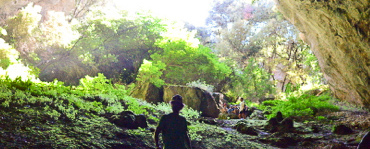
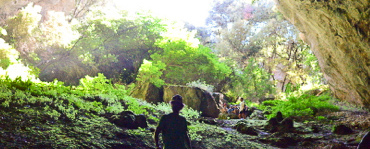

Entre nature et culture
Partez en balade avec Mathieu !
Une demande particulière ? Envie de visiter un endroit spécifique ? Il y a tellement de possibilités et d’itinéraires possibles... Alors contactez-moi pour que nous puissions construire ensemble la balade qui vous convient.
Guide diplômé
Accompagnateur moyenne montagne
Moniteur VTT M.C.F.
Mathieu.
Né en 1982, Mathieu a passé son enfance à la campagne, entre pêche en barque, cabanes et balades en tout genre. Une histoire de famille diriez-vous, son père était également guide. Dans la famille, la balade était le loisir favoris. De fils en aiguilles, et après de nombreux week-ends de marche, Mathieu a fait son premier trek de 8 jours en 1993, puis il s’est attaqué aux Vosges, au Cantal, aux Pyrénées, et ensuite aux Alpes. Ces sorties lui ont permis d’acquérir les connaissances nécessaires à l’encadrement de randonnées.
passant son brevet d’état d’Accompagnateur en Moyenne Montagne, puis lance
son activité de guide en Ardèche en 2011 pour vivre de sa passion, avant de
s’étendre à la région de la Bresse et de la Bourgogne. Passionné de nature et
de culture, Mathieu vous invite à suivre ses pas à travers les sentiers de notre
belle France.
Mathieu vous propose des balades à la demi-journée, à la journée ou sur deux jours en bivouac, avec de nombreuses thématiques. A vous de choisir ce qu’il vous ferait plaisir de voir, de faire, et pendant combien de temps. Une envie en particulier ? Mathieu est à l’écoute pour vous proposez des circuits sur-mesure.
Venez découvrir, le temps d’une demi-journée, cette région qui domine toute la vallée de la Saône et qui offre un panorama à couper le souffle. Cette région est à l’extrême-Est de la Bourgogne d’Antan.
A l’extrême-Est de la Bourgogne d’Antan, venez découvrir cette région qui domine toute la vallée de la Saône et son panorama à couper le souffle.
Ici, pas de bivouac de l’extrême, ni de racines ou d’insectes au programme. Venez découvrir des lieux paisibles invitants à la détente et la déconnexion autour d’un feu. Après une “nuit à la belle étoile”, vous profiterez d’une boisson chaude réconfortante pendant que la nature se réveille...
Le matin, vous partirez à la découverte des alentours du Château de Pierreclos et de son village. Après le pique-nique, vous profiterez d’une visite complète du Château effectuée par mes soins ainsi que d’une dégustation de la production du domaine.
Vous découvrirez les alentours du Château de Pierreclos et de son village dont est originaire le célèbre écrivain/homme politique Alphonse de Lamartine.
Venez découvrir l’Abbaye de Cluny, haut lieu de la Chrétienté entre l’an 1000 et 1500 ans après J-C. Avant d’être détruite, elle fût le plus grand monument religieux d’occident. Vous découvrez également les Haras nationaux, construit sous Napoléon, signe de la puissance historique de la Bourgogne d’Antan.
 
Les gouffres d'Orgnac

Les gouffres d'Orgnac
Proche du célèbre grand site de l’Aven d’Orgnac, je vous invite à découvrir une partie de cette grotte qui s’est effondrée il y a fort longtemps.
Venez découvrir et appréciez la Dent de Rez, point culminant de la vallée du Rhône à plus de 700 mètres. Le panorama s’ouvre entre Ardèche, Cévennes et Préalpes. C’est tout simplement magique !
A l’ombre d’une forêt étonnante, vous remonterez un long canyon dont le microclimat particulier permet le développement de plantes très variées. Après une pause au coeur du canyon, le retour se fait à l’ombre des taillis.
 ">
Le pont d'arc
">
Le pont d'arc
Entre plantes aromatiques et traces d’animaux, vous sortirez des sentiers battus et vous découvrirez le Pont d’Arc d’une manière inattendue.
Le long des sentiers ombragés, vous approcherez les gorges d’Ardèche, où se trouve un site pré-historique caché par la végétation et classé depuis 1911. Le retour se fait par un magnifique sentier de charbonnier, à l’ombre des taillis.
Venez observer les plus grands rapaces d’Europe à l’état sauvage : le Vautour Fauve, l’Aigle de Bonelli et le Pernocptère, présents en Ardèche du Sud. Cette balade matinale est spécialement conçue pour leur observation.
Après une brève initiation aux VAE (Vélo Assistance Electrique), vous découvrirez les alentours de l’Appelation Pouilly-Fuissé et dégusterez ces grands vins blancs dans un caveau. Pour la formule journée complète, le midi est au choix : restaurant typique ou pique-nique dans la campagne.
Venez découvrir cet éperon rocheux, haut lieu de la préhistoire, devenu célèbre grâce au président François Mitterrand. Vous souhaitez voir la Roche dans sa totalité ou préférez la gravir ? A vous de choisir !
Entre vigne, forêt et Orchidées, vous découvrirez l’histoire de la Roche de Solutré et sa faune locale diversifiée. Le matin, nous contemplerons la Roche de loin, et nous gravirons ces lieux mythiques de la préhistoire l’après-midi. Possibilité d’organiser un petit-dej/lever de soleil ou apéro/couché de soleil.
Partez à la découverte du Fût d’Avenas, le plus haut sommet du Beaujolais. Sur toute la journée, vous découvrirez la faune sauvage locale et profiterez d’une vue extraordinaire sur la vallée de la Saône et le Lyonnais. Pour le midi, c’est au choix : restaurant ou pique-nique.
Découvrez l'un de plus haut sommet du Beaujolais : le Fût d’Avenas. Vous partirez à la découverte de la faune sauvage et contemplerez un magnifique panorama sur la vallée de la Saône et le Lyonnais. Pour terminer la balade, il est possible de manger au restaurant ou de pique-niquer.
Je vous invite le long d’une magnifique crête surplombant la Vallée de la Saône. Chemin très emprunté lorsque Cluny et Tournus était des haut lieux de la chrétienté. Deux formules possibles : soit en bivouac et feux de camps ou nuit et repas au refuge. 3 personnes minimum (99€/pers.)
Venez découvrir l’Abbaye de Cluny, haut lieu de la Chrétienté entre l’an 1000 et 1500 ans après J-C. Avant d’être détruite, elle fût le plus grand monument religieux d’occident. Vous découvrez également les Haras nationaux, construit sous Napoléon, signe de la puissance historique de la Bourgogne d’Antan.
De l’apprentissage de l’équilibre au perfectionnement du pilotage, laissez-vous guider sur les chemins Ardéchois ou Bourguignons en toute tranquillité. Du milieu scolaire ou Comité d’entreprise, de l’apprentissage des règles de sécurité au “team building”, tentez l’expérience VTT !